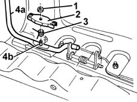

7045A28 lever/knob and panel brackets (1) of one central front seat - r r with seat removed
- Path
- Procedures > 70 FITTINGS > 7045 FRONT SEATS > 7045A front seat assembly > 7045A28 lever/knob and panel brackets (1) of one central front seat - r r with seat removed
- Kind
- repair procedure (removal / refitting; the operation number is the code)
- Applies to
- all engines; all production periods
- Interactive page
- https://sloeber94.github.io/elrnDB-fMltpl/en/#/2892227
Applies to: all engines; all production periods
 Removing
Removing
 Refitting
Refitting1. Working from both sides of the seat slide control lever, disengage the spring washers.
2. Remove the guards.
3. Remove the return springs.
4. Remove the lever (4a), disengaging it from the rotation pins (4b).

Applies to: all engines; all production periods
Refitting
RemovingCheck that the lever is undamaged.
Refit the lever, engaging it in the rotation pins.
Fit the return springs.
Fit the guards.
Engage the spring washers.
Check that the lever works and that the seat slides and engages properly.